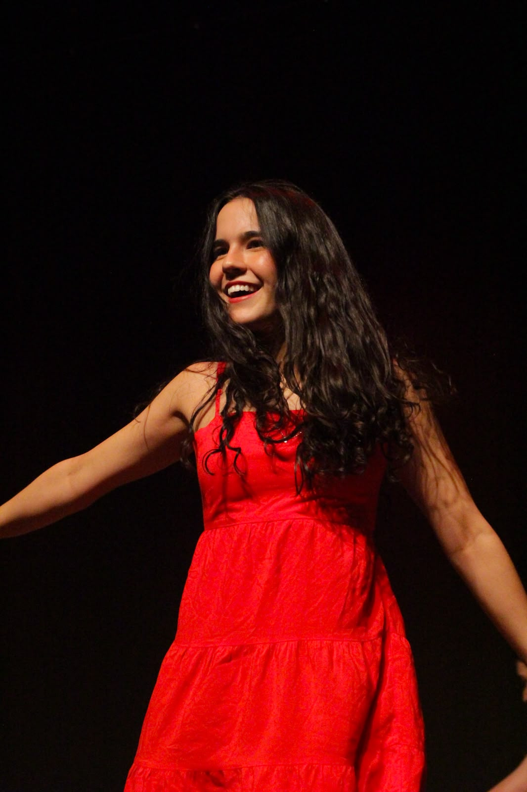
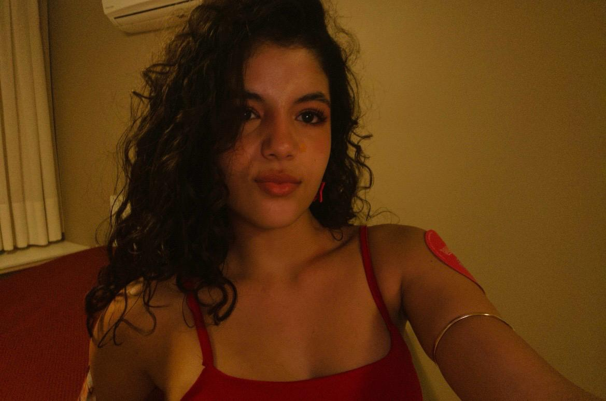

QUEM FAZ A SAMPI
Uma amizade que
virou Sampi.
Por trás dos cookies estão Julia e Giovana: duas amigas que compartilham o gosto pela culinária e a vontade de construir um negócio juntas.

CRIAR, APRENDER E CRESCER
Julia Barreto
Participar da Sampi tem sido uma experiência muito especial e enriquecedora. Além de poder colocar em prática meu gosto pela gastronomia, tenho aprendido muito. É muito gratificante acompanhar o crescimento de algo que começou como uma ideia entre amigas e perceber o quanto evoluímos ao longo desse caminho.
Nas palavras da Julia

AMIZADE E AMOR PELA CULINÁRIA
Giovana Cavalini
A sampi cookies é fruto de uma amizade unida pelo amor à culinária. O interesse meu e de minha parceira por receitas crescia cada vez mais, assim, essa marca é uma forma de expressar nossa paixão e alegrar o dia do próximo com um cookie feito com muito carinho. Portanto, ver esse projeto se concretizar é muito gratificante, pois continua me trazendo conhecimento, experiência, liderança e conexão com o próximo, além de me proporcionar a realização de um sonho!
Nas palavras da Giovana
DA NOSSA HISTÓRIA PARA O SEU DIA
Agora, falta escolher
seu cookie favorito.
Conheça os sabores ou converse com a gente para combinar sua encomenda.